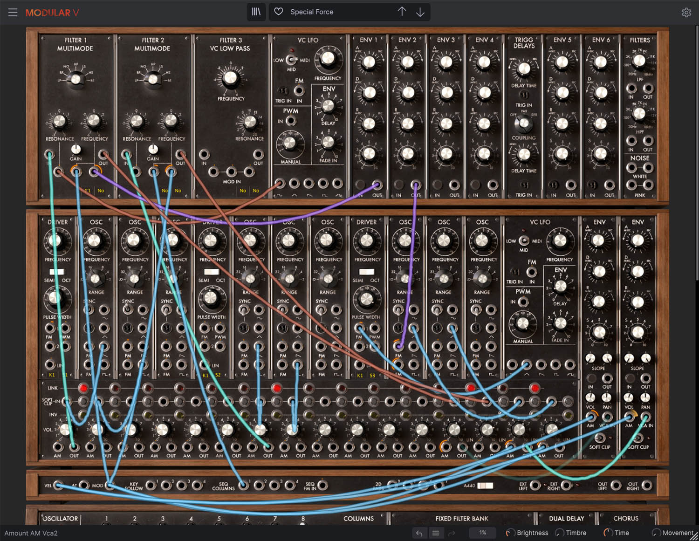

¿A qué llamamos “música electrónica”?
La música electrónica es aquella que utiliza dispositivos eléctricos, electrónicos o digitales para generar, procesar o reproducir sonidos. A diferencia de la música acústica tradicional, donde el sonido se produce mediante la vibración física de cuerdas, membranas o columnas de aire, en la música electrónica el sonido puede surgir directamente de circuitos eléctricos, osciladores o sistemas digitales, o bien de la manipulación tecnológica de sonidos grabados.
Sin embargo, el concepto de música electrónica no tiene un único origen ni una definición fija. Se trata de un campo que ha evolucionado junto con los avances tecnológicos y científicos de cada época y variando según cada lugar del mundo.
Por eso, su historia se puede entender como el resultado de una serie de transformaciones técnicas, culturales y estéticas que comienzan a fines del siglo XIX y continúan hasta la actualidad.

Sintetizador Arturia Modular V